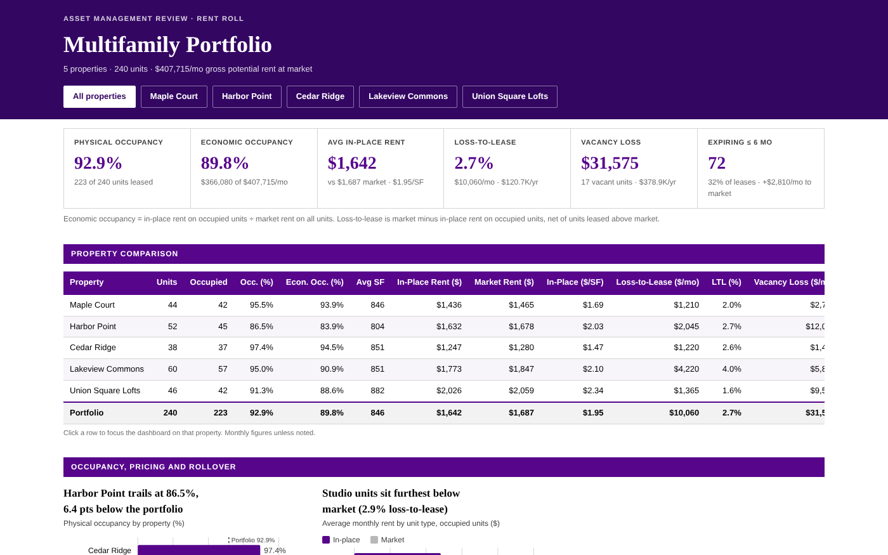
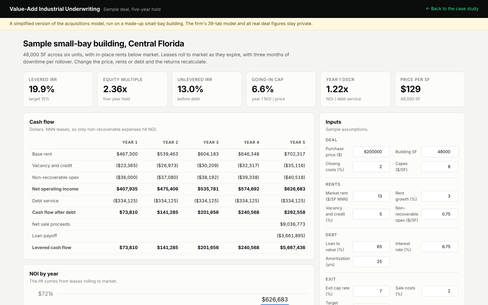
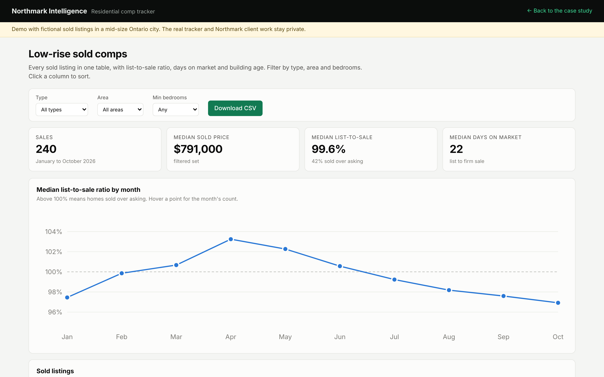
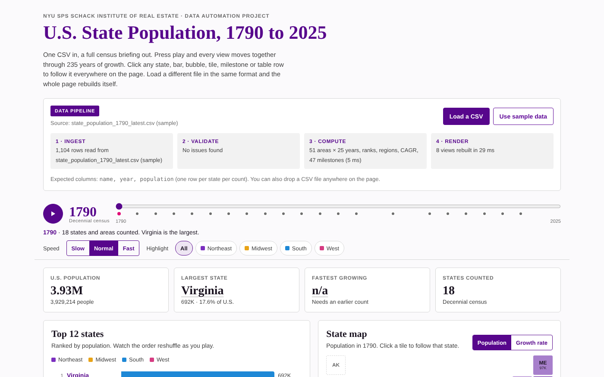
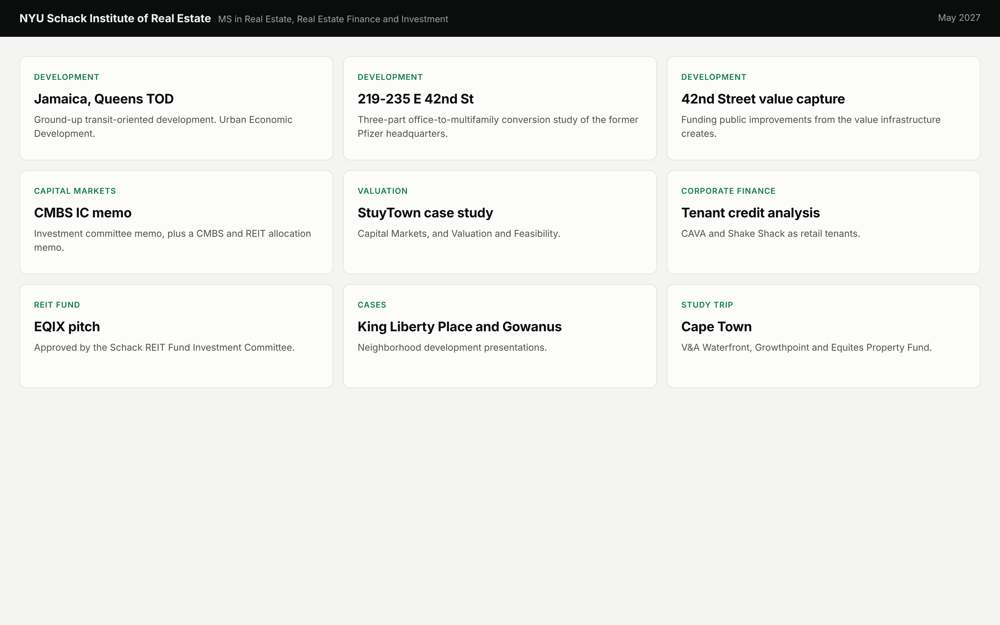

Data tools for real estate investing, built from the deal side.
I source and underwrite value-add industrial deals in Florida and study real estate finance at NYU Schack. These are the tools, models and research I've built along the way, with Claude as my engineering partner. Each one takes a slow manual step in sourcing, underwriting or research and makes it repeatable.
Projects
Everything in one list, then each project in detail: the problem, how it works and what it found.
| Project | What it does | Area | Year | Status |
|---|---|---|---|---|
| Muskoka Development Pipeline | 2026 | Live demo | ||
| Florida industrial distress monitor | 2026 | Live demo | ||
| Off-market sourcing pipeline | 2026 | Live demo | ||
| Multifamily rent roll monitor | 2026 | Live demo | ||
| Digital infrastructure REIT research | 2026 | Live demo | ||
| Industrial acquisitions underwriting | 2026 | Live demo | ||
| Northmark Intelligence | 2026 | Live demo | ||
| U.S. state population explorer | 2026 | Live demo | ||
| Development and finance coursework | 2025-27 | Case study |
Data tools and automation
Tools that replace a manual step in sourcing, market tracking or asset management.

Muskoka Development Pipeline
Every planning application and building permit across Muskoka, Ontario on one map. The data was split across six municipalities and a district GIS, and no paid tracker covered it.

Florida industrial distress monitor
Scores private industrial owners on how likely they are to sell, using CMBS loan tapes, clerk of court records and parcel data, so off-market outreach starts with the best targets.

Off-market sourcing pipeline
Turns a raw Reonomy export of 1,000+ properties into a filtered, CRM-ready call list of mom-and-pop owners. Run on Plant City, Lakeland, Orlando, Tampa and Jacksonville.

Multifamily rent roll monitor
Occupancy, loss-to-lease, unit mix and lease rollover across a 5-property, 240-unit portfolio, filterable by property. It found 68% of leases expiring within 12 months.
Investment research and underwriting
Valuation, acquisitions and market research work, with the confidential numbers left out.

Digital infrastructure REIT research
Sector coverage of AMT, EQIX and DLR for the NYU Schack REIT Fund. My Equinix pitch, valued on NAV, FFO/AFFO, DDM and DCF, was approved by the Investment Committee.

Industrial acquisitions underwriting
50+ value-add industrial deals underwritten across Florida on a 39-tab acquisitions model, plus the scripts I built to repair, document and present the models faster.

Northmark Intelligence
A Toronto research venture producing Canadian commercial real estate research for private equity clients: a GTA market brief, an AI adoption strategy deck and a residential comp tracker.
NYU Schack coursework
Selected work from the MS in Real Estate, Real Estate Finance and Investment.

U.S. state population explorer
One CSV in, a full census briefing out. Every view moves together through 235 years of state growth, and the page rebuilds itself from any file in the same format.

Development and finance coursework
Transit-oriented development in Jamaica, Queens, an office-to-residential conversion on East 42nd Street, a CMBS investment committee memo, the StuyTown case and more.
Approach
The rules I build by.
Start from a real bottleneck
Every tool here came from a step I was doing by hand at work or a problem someone in the market described to me. Finding motivated sellers is the bottleneck in off-market sourcing, so that's what the sourcing tools go after.
Check what already exists
Before building, I look for a product that already solves it. Muskoka got built because the paid trackers stop at Toronto and Vancouver.
Show the source
Figures link back to the filing, notice or record they came from, so anyone can check the number instead of trusting it.
Keep private data private
Real owner lists, deal numbers and loan data stay off the public site. Demos use public records or sample data.
Tools
What I use for models, data and builds.